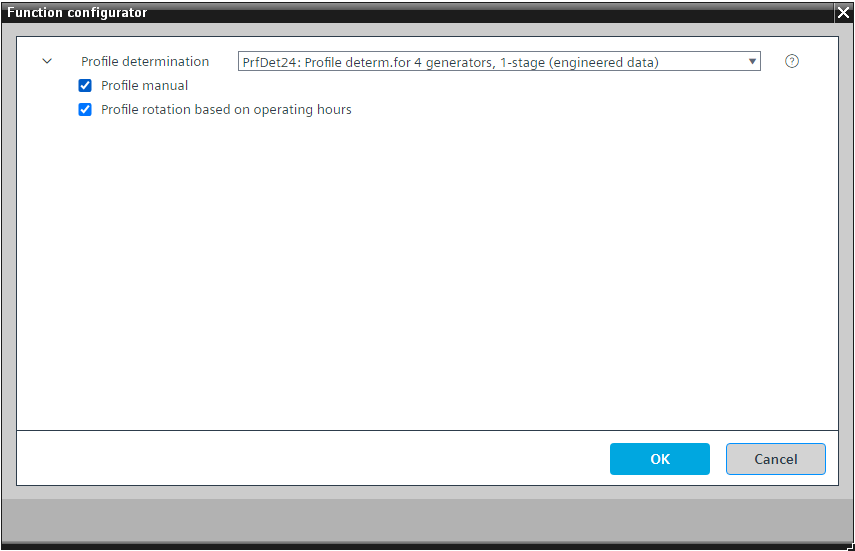

[PrfDet24] 4 台发电机、1 级的轮廓确定
Program block, name / node subtype: [PrfDet24] Profile determination for 4 generators, 1-stage
Library hierarchy: Universal equipment
Family: PrfDet
项目树 | 图表 |
|---|---|
|
|
|


Configurator


程序块存储在没有 I/Os. 的库中 使用auto-create and auto-connect函数创建 I/Os 和 /or 将它们连接到接口块，例如 R_A、CMD_B。或者，从包含库中预定义 I/Os 的文件夹中取出 I/Os，并从工厂中取出 /or，并将它们连接到接口块。
包含一个配置文件表，其中包含 4 个聚合的 4 个配置文件。
外部逻辑（功率控制和补偿）生成指示请求配置文件表的哪一行的信号。配置文件表发布聚合的操作状态并将其发送到聚合。内部逻辑定义哪些配置文件处于活动状态并更改它们，例如基于聚合的运行时间或基于手动选择。
配置文件在功能块 SELP_8MS 中定义（8 个多状态值的配置文件和表值选择）。
Example of a profile table
Profile 1
第 1 行：聚合 1=关闭、聚合 2=关闭、聚合 3=关闭、聚合 4=关闭
第 2 行：聚合 1=开启，聚合 2=关闭，聚合 3=关闭，聚合 4=关闭
第 3 行：聚合 1=固定，聚合 2=开启，聚合 3=关闭，聚合 4=关闭
第 3 行：聚合 1=固定，聚合 2=固定，聚合 3=开启，聚合 4=关闭
第 3 行：聚合 1=固定，聚合 2=固定，聚合 3=固定，聚合 4=开启
Profile 2
第 1 行：聚合 1=关闭、聚合 2=关闭、聚合 3=关闭、聚合 4=关闭
第 2 行：聚合 1=关闭，聚合 2=打开，聚合 3=关闭，聚合 4=关闭
第 3 行：聚合 1=关闭，聚合 2=固定，聚合 3=打开，聚合 4=关闭
第 3 行：聚合 1=关闭，聚合 2=固定，聚合 3=固定，聚合 4=打开
第 3 行：聚合 1=开启、聚合 2=固定、聚合 3=固定、聚合 4=固定
Profile 3
第 1 行：聚合 1=关闭、聚合 2=关闭、聚合 3=关闭、聚合 4=关闭
第 2 行：聚合 1=关闭，聚合 2=关闭，聚合 3=打开，聚合 4=关闭
第 3 行：聚合 1=关闭，聚合 2=关闭，聚合 3=固定，聚合 4=打开
第 3 行：聚合 1=开启，聚合 2=关闭，聚合 3=固定，聚合 4=固定
第 3 行：聚合 1=固定，聚合 2=开启，聚合 3=固定，聚合 4=固定
Profile 4
第 1 行：聚合 1=关闭、聚合 2=关闭、聚合 3=关闭、聚合 4=关闭
第 2 行：聚合 1=关闭、聚合 2=关闭、聚合 3=关闭、聚合 4=打开
第 3 行：聚合 1=开启，聚合 2=关闭，聚合 3=关闭，聚合 4=固定
第 3 行：聚合 1=固定，聚合 2=开启，聚合 3=关闭，聚合 4=固定
第 3 行：聚合 1=固定，聚合 2=固定，聚合 3=开启，聚合 4=固定
“固定”是类似于“开”的操作状态，但在聚合中的解释不同。例如，当操作状态为“开”时，聚合的控制单元调制功率。当工作状态为“固定”时，它停止调制并尝试维持标称功率。
第 1 行代表发电设备的“关闭”状态。为所有聚合定义操作状态“关闭”。
设置下一行的聚合状态，以便启用的聚合的总功率增加。
功能块 SELP8_MS 中配置文件的“行数”设置很重要，因为它是通过输出引脚和程序中与外部逻辑的连接发出的，用于“功率控制和补偿”。当到达最后一行时，后者停止并请求更多功率（下一行）。如果您调整项目，请调整此设置。
该程序块具有以下可选功能：
Option: Profile manual
用于手动选择配置文件的多状态配置值。
Option: Profile rotation based on operating hours
程序逻辑（功能块 ROT_8）测量两台发电机的运行时间，并在该功能打开时选择从运行时间较少的发电机开始的配置文件。个人资料更改仅允许在短时间内进行，例如每周二凌晨 4:00 至下午 4:05 之间。
姓名 | 描述 | 类型 | 报警/通知类 | 趋势/类型 | |
|---|---|---|---|---|---|
PrPrf | Present profile | MCalcVal: Multistate calculated value | No | No | |
姓名 | 描述 | 类型 | 报警/通知类 | 趋势/类型 | |
|---|---|---|---|---|---|
PrfMan | Profile manual | MCnfVal: Multistate configuration value | No | No | |
描述 |
|---|
Profile rotation based on operating hours |